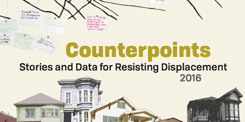
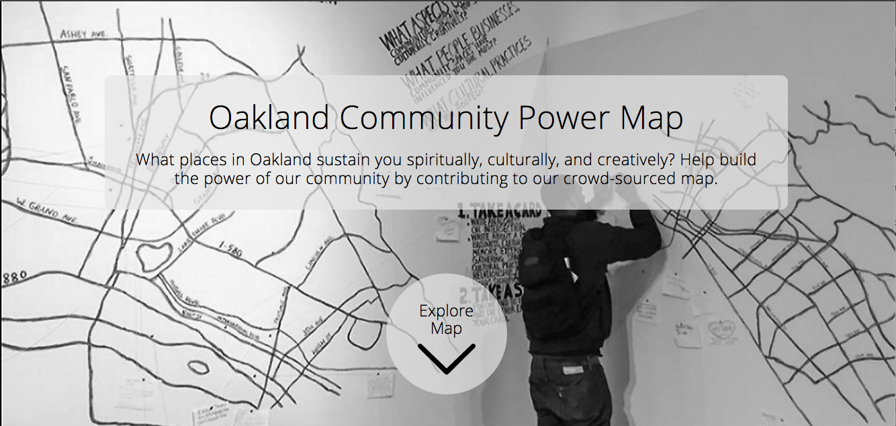

Oakland UD
EVICTIONS
0
Unlawful Detainer Notices Filed,


This map reveals the accumulation of Unlawful Detainer (UD) Evictions in Oakland, California from 2005 to 2016. In partership with Tenants Together, the Anti-Eviction Mapping Project created this based on record requests made to the Alameda County courthouse. While foreclosures have devasted Oakland over the last decade, they are now on the decline as UDs continue to alter the urban landscape. Rental increases only exacerbate displacement, targetting poor and working-class tenants, and disproportionately tenants of color.
More analysis can be found in our online interactive report, Counterpoints: Stories and Data for Resisting Displacement. A printable version of the report can be found here.
Included in our online report are multiple video and audio pieces, all mapped on our Narrative Map.
Also included are crowdsourced maps such as our Oakland Community Power Map, a collaboration with the Betti Ono Gallery.
